Company planners should see whose parties you’ve cooked before anything else
Prepared by Astra for Erik Schmidt-Lange and Frederik Schreier, October 2026.
You’ve cooked for Porsche, the Städel Museum and Bosch. We built a site that opens on your own burger, puts those names on the first screen, and fills in the enquiry as a planner scrolls.
See the siteOn a phone, Porsche Sommerfest and Städel Night first show 4.21 screens down your home page, inside a strip that moves.
tastefrankfurt.com/ at 390 by 844, y 3,552 of 7,518 px, read 30 October 2026
The same three reasons stand on 17 of your 57 pages, each time beside the client strip.
every URL in https://tastefrankfurt.com/page-sitemap.xml, read 29 October 2026
Your price page is linked from 41 of those pages, and not once from the home or the menu.
every URL in https://tastefrankfurt.com/page-sitemap.xml, the home rechecked, read 30 October 2026
There are no customers' words on the site, while Naboo shows 5 from 13 reviews.
www.naboo.app/en-us/explorer/restaurants/taste-frankfurt, read 29 October 2026
Your site today, as a planner meets it
Taken on 30 October 2026, on a laptop and on a phone. It’s five months old and it works. What follows is only about where a planner finds the things they came for.
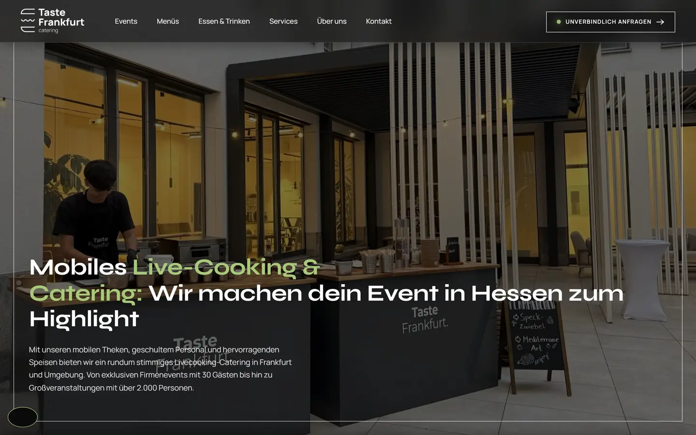
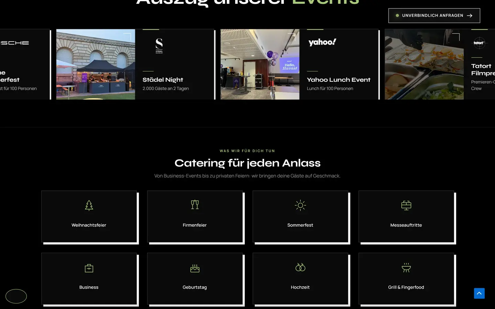
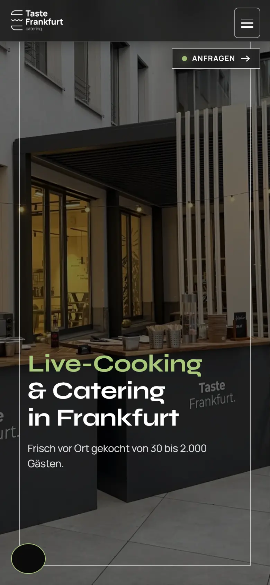
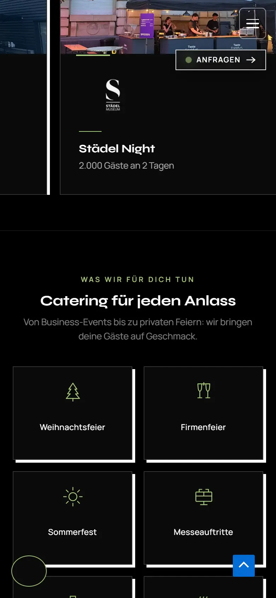
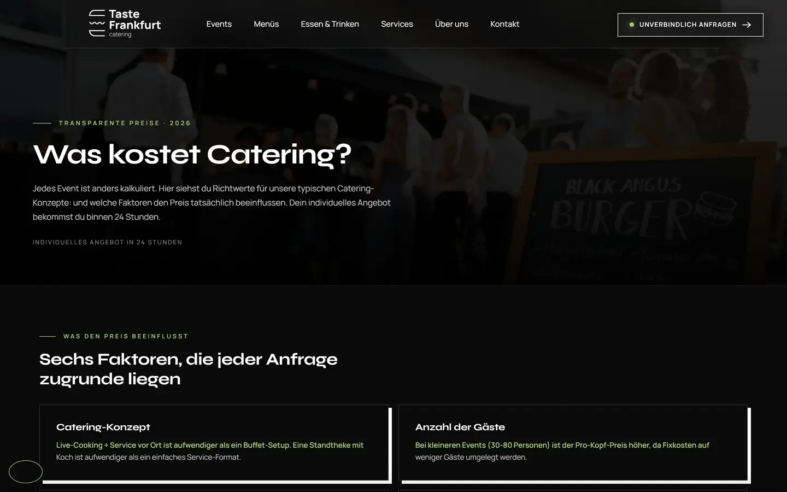
One planner, one evening, on your site today and on the new one
They search Weihnachtsfeier Catering Frankfurt and land on your home.
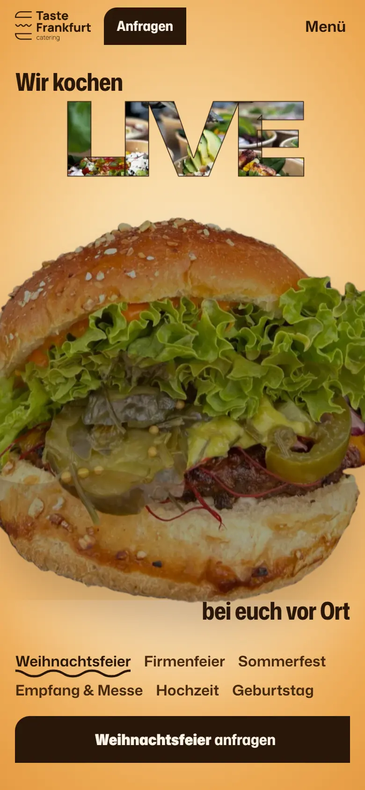
They want to know you’ve done this for companies like theirs.
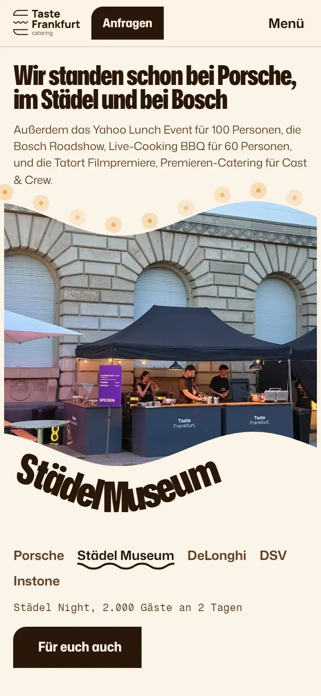
They wonder whether your stand fits their office or courtyard.
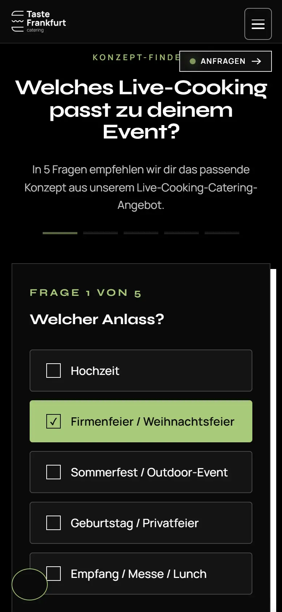
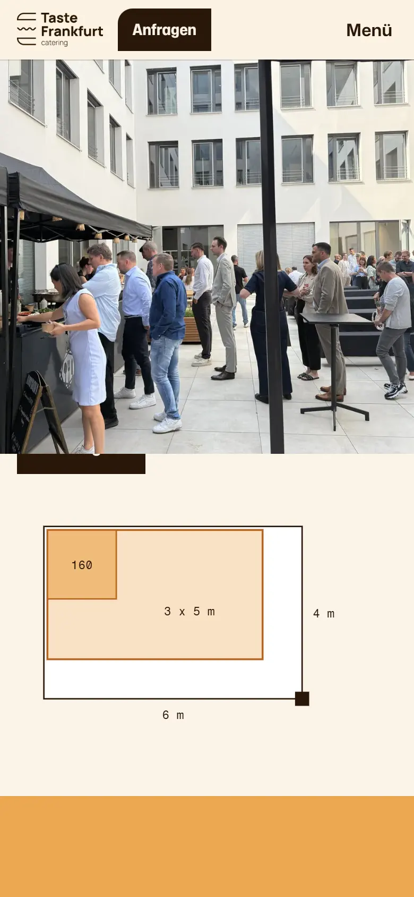
They need a rough figure before they ask their boss.
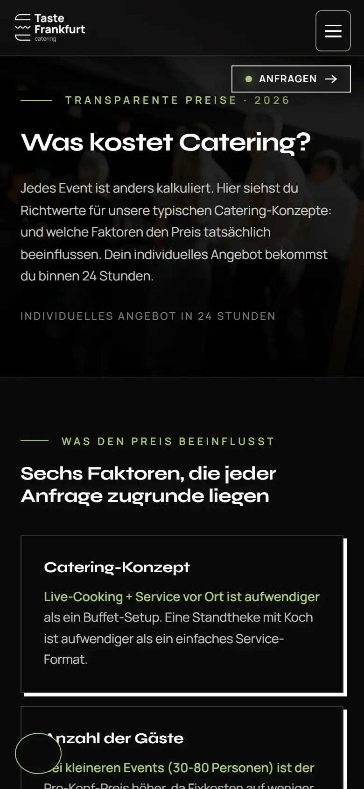
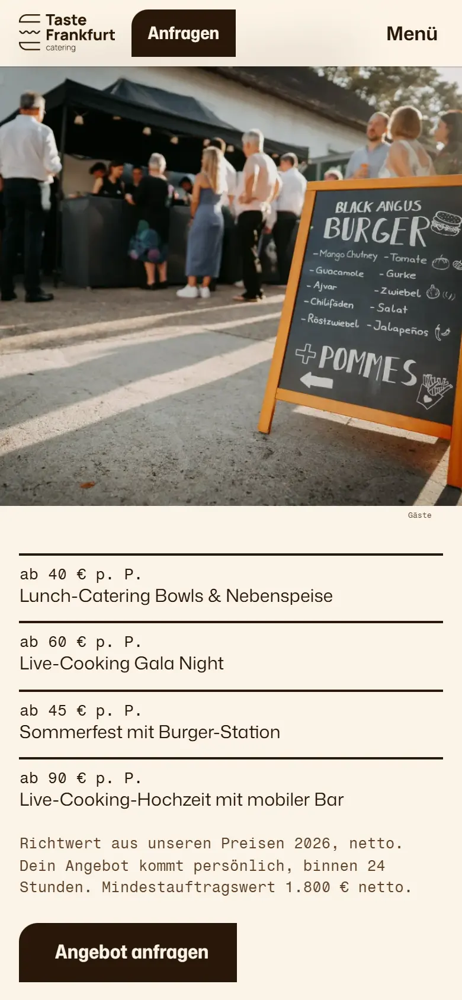
They ask for an offer.
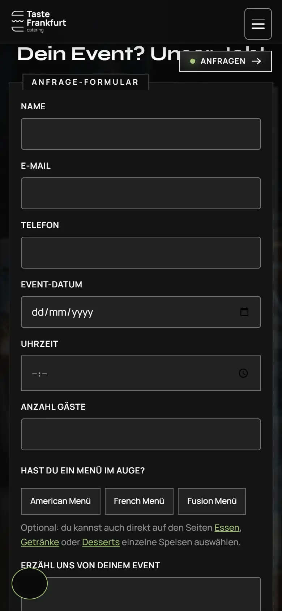
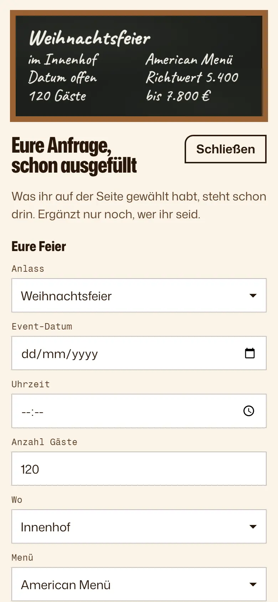
What one company party is worth to you
From your own published prices, 45 to 65 € a head net and a minimum order of 1,800 €. This is turnover, not profit. The defaults are examples, move them to your own numbers.
one party, turnover
a season of extra parties, turnover
Companies plan their Christmas party around the 110 € a head line, which holds for up to two such parties a year. No tax advice.
www.ihk-muenchen.de/ratgeber/recht/arbeitsrecht/bestehende-arbeitsverhaeltnisse-kuendigung-sozialversicherung/weihnachtsfeier/, read 30 October 2026
tastefrankfurt.com/catering-preise/, read 29 October 2026
The site we built for you
Your own burger, your own film, your own events and your own prices, in German with an English switch. Open it and try it on your phone.
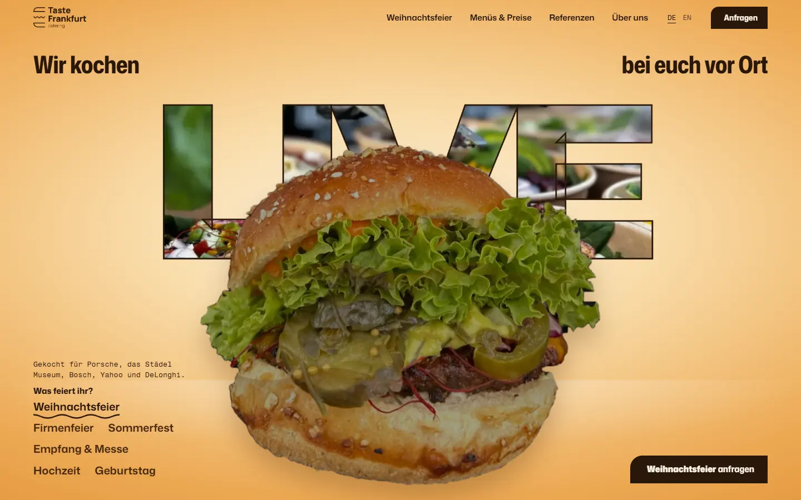
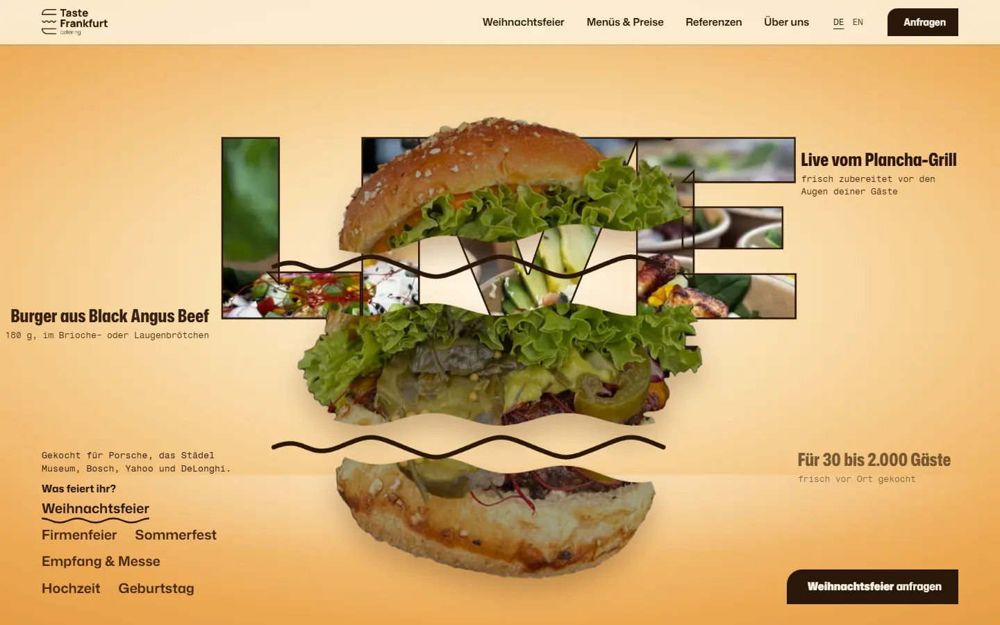
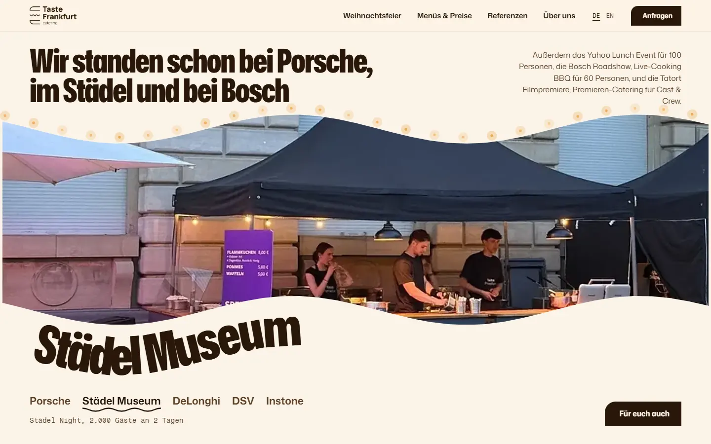
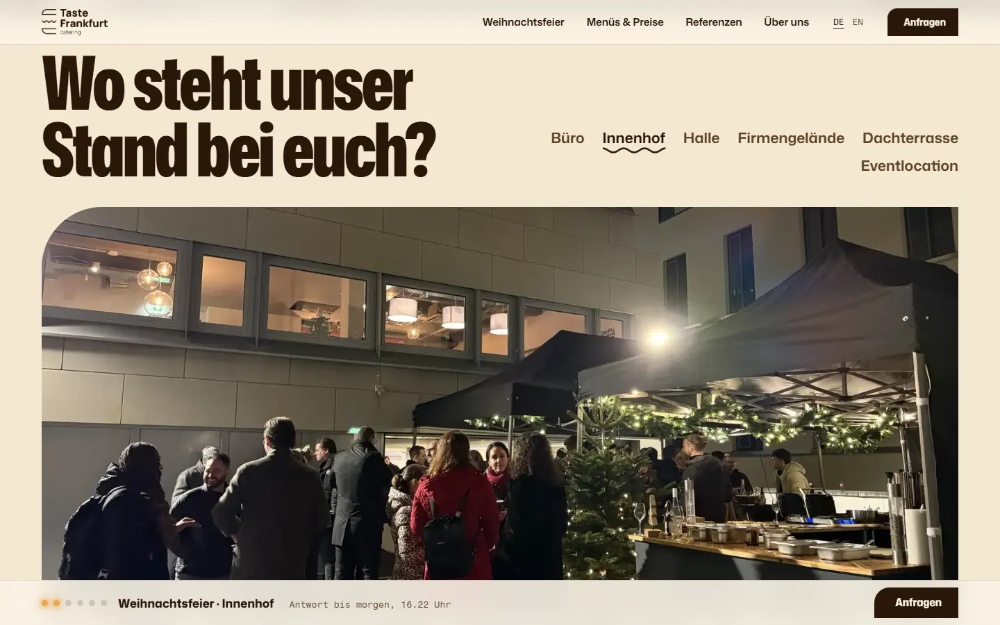
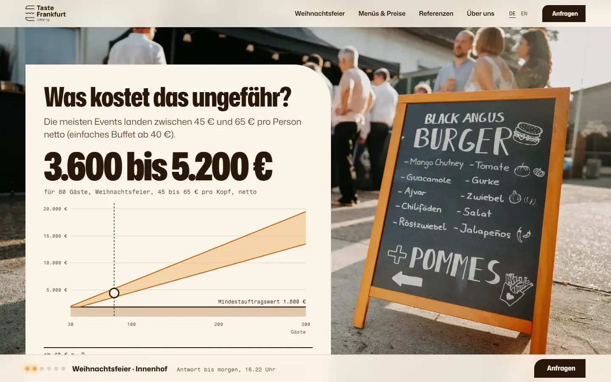
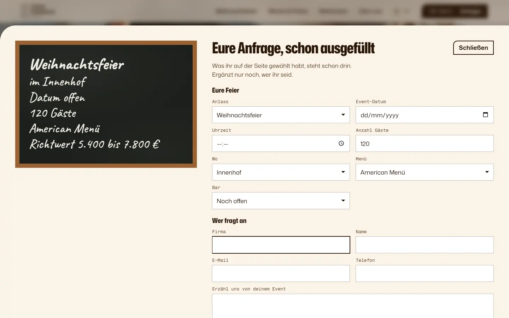
What runs underneath
Proposed, and chosen with you.
Pages your team edits
The menus, the prices, the photos and the Christmas page, changed without a developer.
Every address kept
Every one of today’s 57 addresses kept or redirected one to one, so your city pages and guides keep their search traffic.
The enquiry, complete
It arrives in your inbox with the same fields as today, filled in, plus where it came from.
Your clients’ words
Reviews from where your clients already leave them, shown with their permission.
Fast on a phone
Your films and photos load quickly on a phone at a planner’s desk or on the sofa.
Counted from day one
Enquiries counted by source from the first day, so you see which pages bring them.
500 € for the whole site
One price for everything in this plan, half to start and half when it’s live.
Included
The site from the prototype with every moment in it, every page, the enquiry, and everything in what runs underneath.
Not in the price
Hosting and any paid tools, and your ad spend.
4 weeks to live
- 1 week
The content and the hero
- 2 weeks
The pages, the enquiry and the redirects
- 1 week
The test week and live
Who builds it, and next
Astra plans and builds websites, apps and the systems around them. Astra and Amwisesa work as one team, Astra on strategy and project management, Amwisesa building.
The team has built for Unilever, Pertamina, the World Bank, Nestlé, IKEA, Panasonic, AXA, AIA, Bank Mandiri and Telkom.
Built by Amwisesa, Astra’s development partner, often through the brand’s own agency.
Raka Mulya
Go to market architect and entrepreneur. Your contact at Astra.
Led global ebusiness data and insights at Heineken across 23 markets, and ran global go to market for Betty Blocks, the low code platform. Now runs sales and channel operations at efficy, a European CRM company. He also founded a stroopwafel brand from nothing and scaled it.
LinkedInJoshua van Zeelt
Founder of Astra Agency and JML Agency.
Builds custom websites, software and apps from the first conversation to launch. Studied artificial intelligence at VU Amsterdam and holds an MSc in Strategic Entrepreneurship from RSM Erasmus. Spent seven years coordinating projects at Schiphol, where he helped develop an asset app that forecasts maintenance.
LinkedInNext, a call
Twenty minutes to walk through the site and the plan and settle where to start.
Email Raka